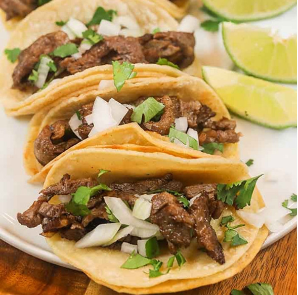

Steak Tacos

Description
If you love tacos, you'll love this recipe! We'll show you how to make them just like they do at your favorite taco truck! The best part is that it's so simple and easy!
Ingredients
- Steak (Flank or Skirt would work best)
- Vegetable Oil
- Onion
- Lime
- Cilantro
- Taco Seasoning
- Salsa (Green or Red)
- Mini Tortillas
Steps
- Slice steak into small pieces
- Season steak generously with taco seasoning
- Dice your onion into similar small pieces
- Roughly chop up cilantro
- Heat skillet to medium high heat and add oil
- Add your steak to the skillet, letting it cook for a few minutes on both sides and placing it on a plate or bowl
- Heat up tortillas in skillet for a couple minutes, making sure not to burn them
- Assembly time! Add some steak to a tortilla, then the onion and cilantro, squeeze some lime juice over it, and top off with some salsa if you like
- Enjoy!